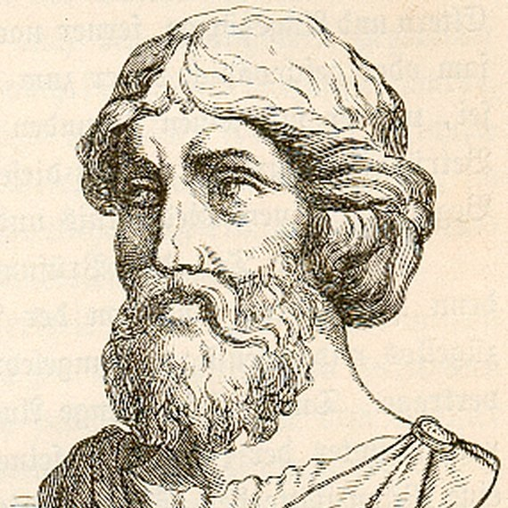
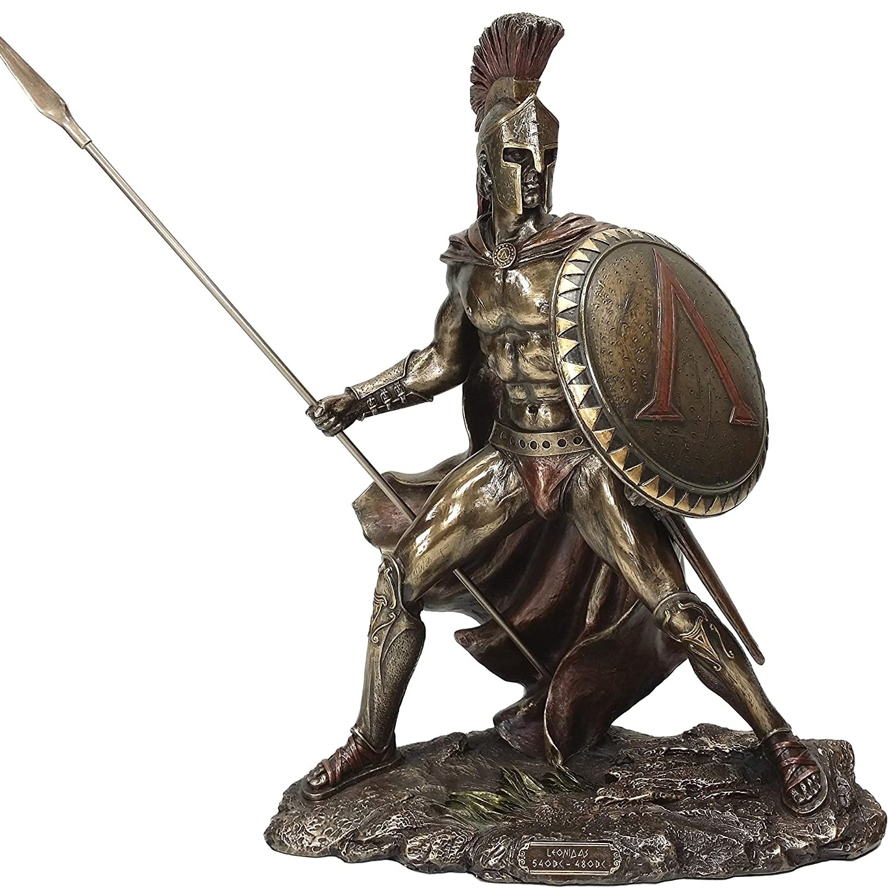

PERSONALITĂȚI
Grecia antică este una dintre cele mai mari civilizații din istoria omenirii și a avut un impact enorm asupra culturilor ulterioare care au apărut după căderea ei. Este imposibil să vorbim despre bogata istorie a Greciei antice fără a aduce unele dintre cele mai faimoase personalități grecești. De la crearea primelor opere de literatură și inventarea unor evenimente uriașe, cum ar fi Jocurile Olimpice, la teorii inovatoare și experimentare în matematică și știință, importanța acestor personalități nu poate fi exagerată.
 |
Alexandru cel Mare. Nãscut la Pella în 356 a. Hr., Alexandru îl are ca tuture pe Aristotel pãnã la vârsta de 16 ani. La 30 de ani este fãuritorul unuia dintre cele mai vaste imperii din lumea anticã, care se întinde la Marea Ionianã la Himalaya. Rãmâne neînvins în bãtãlie şi este considerat unul dintre cei mai mari comandanţi din istorie. |
Socrate. Creditat drept unul dintre fondatorii filozofiei vestice, este o figurã enigmaticã cunoscutã mai ales prin scrierile elevilor sãu Platon şi Xenofon, precum şi comediile lui Aristofan. Prin portretul pe care i-l face Platon, Socrate capãtã un renume în domeniul eticii şi tot el dã numele conceptelor de ironie socraticã şi metodã socraticã. |
|  | Pitagora Are contribuţii majore în religie şi teologie în secolul al VI-lea. Adesea este apreciat drept un mathematician talentat, un mistic şi om de ştiinta, dar cel mai cunoscut este pentru teorema omonimã. Totuşi, pentru cã legenda umbreşte opera sa în şi mai mare mãsurã comparative cu alţi filozofi presocratici, se pot spune relative puţine despre învãţãturile sale. |
Pericle. Om de stat remarcabil, orator şi general atenian în timpul epocii de aur a oraşului. Influenta sa asupra societãţii ateniene este atât de proeminentã încât istoricul Tucidide îl declarã “primul cetãţean al Atenei”. Pericle transformã Liga de la Delos într-un veritabil imperiu atenian şi este commandant în primii doi ani ai rãzboiului peloponeziac. |
|  | Leonidas. Eroul-rege al Spartei, al 17-lea pe linia Agizilor, unul dintre fiii lui Anaxandridas al II-lea, ilustrat în mitologie sub chipul unui descendent al lui Herakles. Notabil pentru nãtãlia de la Termopile, cea mai faimoasã mişcare de rezistentã din antichitate. Povestea luptei cu soarta ne este transmisã de Herodot. |
Hippocrate. Medicul din Cos care a trait în era lui Pericle este o figurã remarcabilã în domeniul medicinii, numit pãrintele sãu în virtutea cercetãrilor întreprinse şi fondãrii Scolii Hippocratice. El revoluţioneazã domeniul, delimitând disciplina de altele cu care a tot fost asociatã (teurgia, filozofia) şi definind-o ca pe o profesie. |